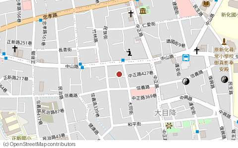

⚠ 本物件已到期下架（拍賣日 2026-07-22 已逾 3 天寬限期），以下資訊僅供參考。
法拍女王 陳慧瑜｜專業代標．未得標免付費

📍 位置地圖（點下方地圖定位看實景）
0917-270-656｜LINE：a0917270656
台南市｜新化區透天
第二拍部份點交、部份不點交
新化區大同街透天厝
TND115南金職巳字第202號
🏠 物件基本資料
- 物件名稱
- 新化區大同街透天厝
- 門牌地址
- 台南市新化區大同街131-1號3層樓
- 社區
- —
- 類型／樓層
- 透天／3層樓
- 登記坪數
- 建坪 128.8 坪／地坪 48.5 坪 （單價約 8.8 萬/坪）
🔨 法拍拍賣資訊
- 拍賣單位、法院
- 臺灣臺南地方法院
- 拍賣日期
- 7 月 22 日（2026-07-22） 10：30 開標
- 目前拍別
- 第二拍
- 點交狀態
- 部份點交、部份不點交
- 拍賣底價
- 1,132 萬
- 投標保證金
- 約 226 萬 （一般為底價二成，以法院公告為準）
🚗 生活與交通機能
- 物件特色
- 座落台南市新化區大同街，透天厝使用彈性大，建坪約128.8坪，鄰近大新國小，生活採買便利。
- 交通機能
- 距國道新化休息站交流道車程約 3 分鐘。
- 生活購物
- 1 公里內有：7-ELEVEN、全家、全聯、小蒜頭鹹酥雞、八方雲集，日常採買便利。
- 鄰近學校
- 1 公里內有 大新國小、新化國中、新化國小、國立新化高級中學。
📞 聯絡與服務資訊
- 承辦窗口
- 總經理 陳慧瑜（法拍女王）
- 聯絡電話
- 0917-270-656
- LINE ID
a0917270656- 服務公司
- 一零四高欣仲介經紀有限公司（統一編號：13197081）
- 經紀人
- 鄭淑靜（96）高市字第0330號
- 提供服務
- 專業代標、負責點交、代墊、貸款
📝 重要注意事項
- 下架規則：本物件於拍賣日（2026-07-22）後 3 天寬限期屆滿，即自動顯示「本物件已到期下架」。
- 拍賣規則：法拍資訊一切以法院公告為準。看屋與點交條件請以法院公告為準。
- 投標時限：投標有日期限制，請於開標日前完成投標準備；未得標免付費。